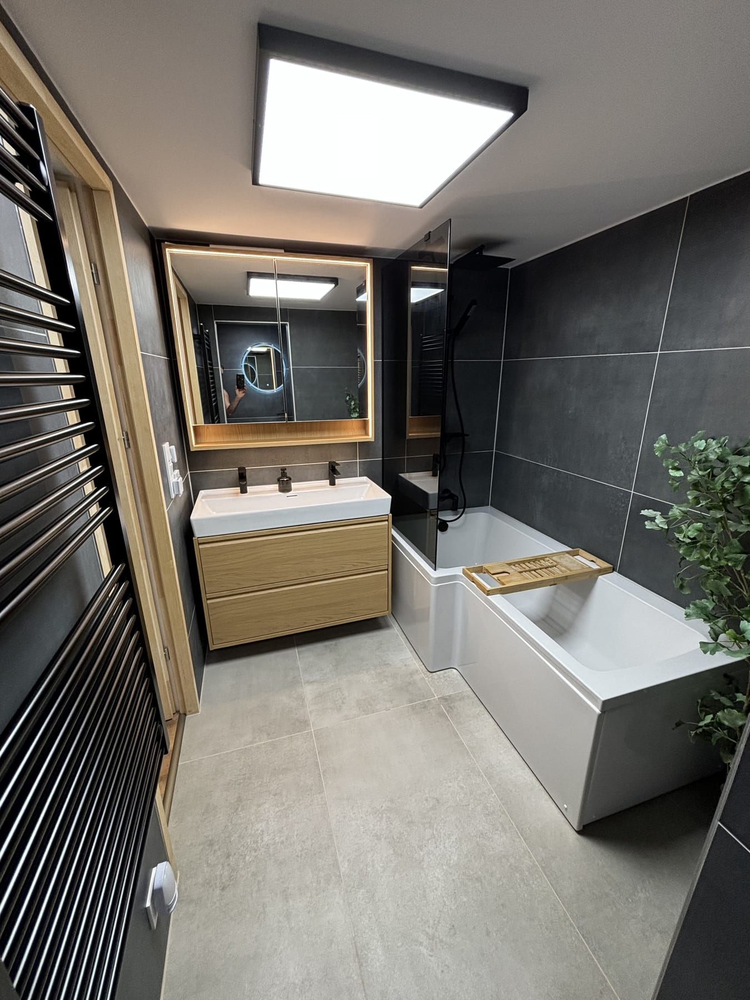

Teljes körű ingatlanfelújítás,
egy felelős csapattal.
Lakás, családi ház vagy egyetlen helyiség — a felújítás minden munkafázisa nálunk fut össze. Bontástól a kulcsátadásig egyetlen felelős kivitelező koordinálja a gépészetet, a villanyszerelést, a falazást, a burkolást és a festést. Önnek nem kell külön mestereket keresnie és összehangolnia.

Egész lakástól egyetlen helyiségig
Akár egy teljes lakást vagy családi házat újítunk fel, akár csak a konyhát vagy a nappalit — ugyanazzal a precizitással és kézben tartott szervezéssel dolgozunk, amit a fürdőszoba-felújításnál megszokhatott tőlünk.
Lépésről lépésre — kattintson a részletekért
Átlátható, jól strukturált folyamat: pontosan tudja, mi vár Önre az első egyeztetéstől a kulcsátadásig — még egy nagyobb, többhelyiséges felújításnál is.
Egy rövid egyeztetéssel indulunk, ahol átbeszéljük, mit szeretne felújítani: egy egész lakást, egy házat vagy csak egy-két helyiséget.
- Fotók vagy alaprajz küldése nagyban segíti az első konzultációt.
A pontos árajánlathoz személyes felmérés szükséges. A helyszínen:
- felmérjük a helyiségeket és a méreteket,
- ellenőrizzük a gépészeti és elektromos adottságokat,
- átbeszéljük a műszaki lehetőségeket és korlátokat,
- javaslatokat adunk a praktikusabb térkialakításra.
Külön figyelmet fordítunk arra, hogy a megoldás hosszú távon is megbízható és kényelmesen használható legyen.
A felmérés után részletes árajánlat készül, amely tartalmazza:
- a felújítás tervezett tartalmát helyiségenként,
- a munkafolyamatokat és szakágakat,
- az anyagigényeket,
- a várható ütemezést,
- a fizetési ütemezést.
Tételes, átlátható költségterv — meglepetések nélkül.
A munka megkezdése előtt véglegesítjük a részleteket és összehangoljuk a szakágakat:
- burkolatok, parketta és festékszínek kiválasztása,
- szaniterek, csaptelepek, beépített bútorok,
- a szakmák sorrendjének és ütemezésének rögzítése.
Személyesen segítünk az anyagok és márkák kiválasztásában — az ízléséhez és a kerethez igazítva.
A régi burkolatok, vezetékek és szerkezetek bontása után előkészítjük a teret. A tisztaságra és a pormentes munkavégzésre kiemelten figyelünk:
- közlekedési útvonalak és bútorok védelme,
- porvédő takarás, porelszívás,
- folyamatos, napi takarítás.
Ebben a szakaszban készülnek el a falban futó rendszerek:
- víz-, lefolyó- és fűtésvezetékek,
- elektromos kábelezés, dugaljak, kapcsolók,
- világítás és elszívás előkészítése.
A pontos méretezésre és a későbbi használhatóságra kiemelt figyelmet fordítunk.
Ahol az alaprajz változik, kialakítjuk az új tereket:
- tégla- és Ytong válaszfalak,
- gipszkarton térelválasztók és előtétfalak,
- álmennyezetek és gépészeti takarások,
- vakolás, glettelés, aljzatkészítés.
Az igények alapján készülhet:
- csempe- és padlólap-burkolat a vizes helyiségekben,
- vinyl vagy laminált parketta a lakóterekben,
- mikrocement vagy falpanel a hangsúlyos felületeken,
- festés és mázolás a teljes lakásban.
Modern, letisztult megjelenésre és könnyű tisztíthatóságra törekszünk.
A burkolás után beépítjük a berendezést és elvégezzük a finombeállításokat:
- szaniterek, csaptelepek, konyhabútor és beépített szekrények,
- ajtók, szegélyek, kapcsolók és világítótestek,
- végső szilikonozás, finombeállítás és átnézés.
A munka végén kitakarítjuk a munkaterületet, és közösen átadjuk a kész ingatlant. Az átadás során:
- minden funkciót ellenőrzünk,
- bemutatjuk a használatot,
- átadjuk a szükséges információkat és a 2 év munkagaranciát.
Egy csapat, minden szakmával
Beszéljük át a felújítását.
Egy ingyenes helyszíni felmérés után pontosan tudni fogja, mibe kerül és meddig tart a felújítás.